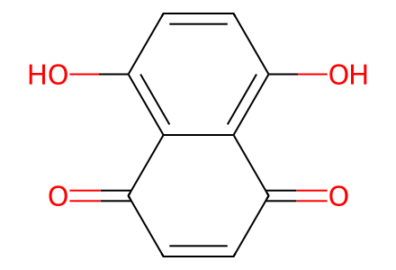
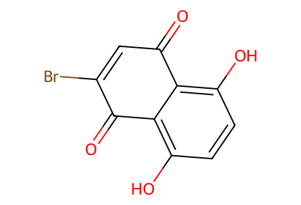
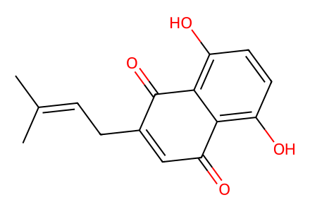
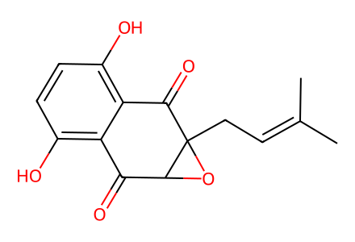

O=C1C=CC(=O)c2c(O)ccc(O)c21All three forward preparations in available SI pp2-4 and Figure S4-S6 p6, including the drawn prenyl bromide coupling substrate. Main article unavailable locally; no full-article coverage claim. Epoxide absolute configuration not specified by source drawings. Facts compiled deterministically; independent review pending.
完整 JSON · 逐步 CSV · 路线序列 · SDF · HRMS 核对
| 事件 | 分子连接 | 报告产率 | Canonical reaction SMILES |
|---|---|---|---|
| E01 | 4 → 3 | 3: 90% | O=C1C=CC(=O)c2c(O)ccc(O)c21>>O=C1C=C(Br)C(=O)c2c(O)ccc(O)c21 |
| E02 | 3 + prenyl-bromide → 2 | 2: 65.23% | CC(C)=CCBr.O=C1C=C(Br)C(=O)c2c(O)ccc(O)c21>>CC(C)=CCC1=CC(=O)c2c(O)ccc(O)c2C1=O |
| E03 | 2 → 1 | 1: 48% | CC(C)=CCC1=CC(=O)c2c(O)ccc(O)c2C1=O>>CC(C)=CCC12OC1C(=O)c1c(O)ccc(O)c1C2=O |

O=C1C=CC(=O)c2c(O)ccc(O)c21
O=C1C=C(Br)C(=O)c2c(O)ccc(O)c21
CC(C)=CCBr
CC(C)=CCC1=CC(=O)c2c(O)ccc(O)c2C1=O
CC(C)=CCC12OC1C(=O)c1c(O)ccc(O)c1C2=O